Edit Web Catalog Content Tree¶
To edit a web catalog content tree:
- Navigate to Marketing > Web Catalogs in the main menu.
- Click on the web catalog to open its details.
Click the Edit Content Tree on the top right of the page.
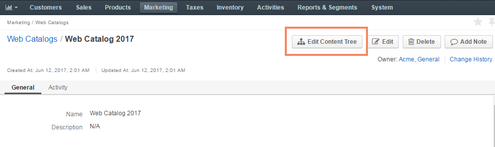In the page that opens, fill in the details of the homepage node of the web catalog as described in the Set Up the Homepage, First Level Menu, and Sub Menus section.
The content selected in the content variants of the homepage node is shown when the buyer navigates to the OroCommerce storefront. The *homepage node also acts as a parent node for the web catalog menu and sub menu items. It is recommended to use Oro Frontend Root system page as a root node of your web catalog.
Under the homepage node, create main menu content nodes (e.g. first level of the main menu in the storefront) as described in the Set Up the Homepage, First Level Menu, and Sub Menus section. It is recommended to create a dedicated landing page for main menu nodes of your web catalog.
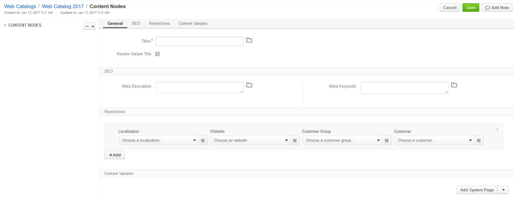
Once the main menu nodes are saved, create sub-menu content nodes. These will be shown as the second level of the main menu on the OroCommerce Store Front:
Ensure that the appropriate main menu node is selected in the content nodes structure to the left.
Click Create Content Node on the top right of the page.

The following page opens:
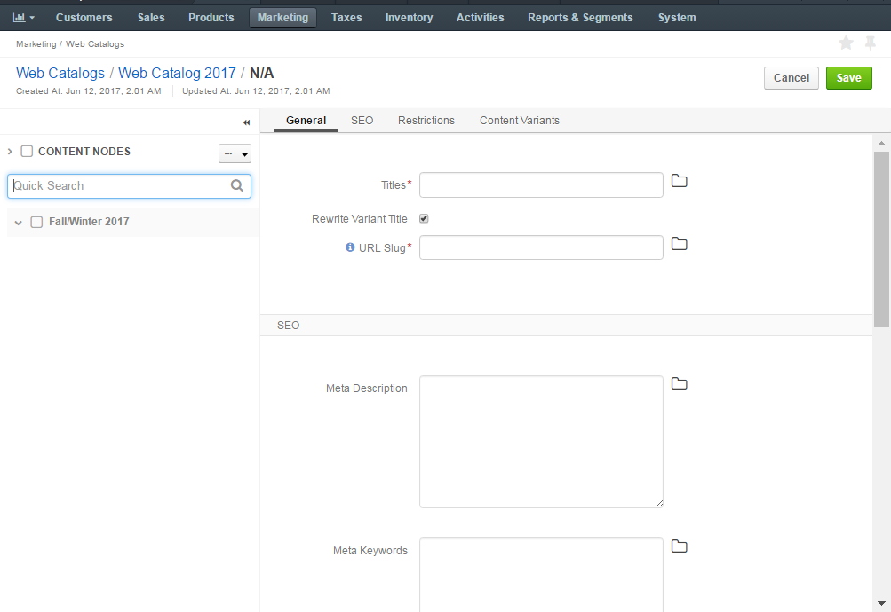Set up the sub-menu node as described in the Set Up the Homepage, First Level Menu, and Sub Menus section.
Click Save on the top right of the page.
This way you can set up as many sub-menu nodes as you need.
Note
You can drag the existing content nodes to a different position within the content tree on the left of the page, as illustrated below:
Set Up the Homepage, First Level Menu, and Sub Menus¶
Concepts¶
The homepage that is shown when a buyer navigates to the web store is configured by the very first node created in the web catalog (homepage node).
The first level of the main menu in the storefront is represented by root content nodes in the management console.
Storefront:
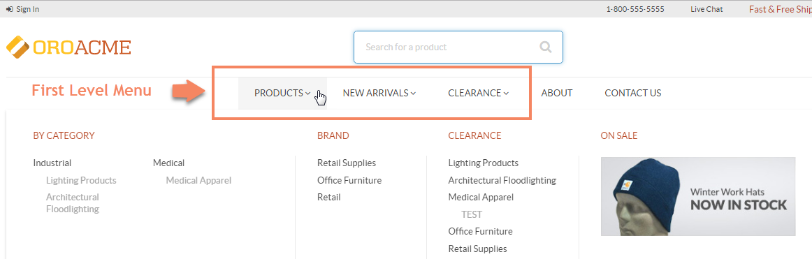Management Console:

Root content nodes are nested under the homepage node.
After you set up the first level of the main menu, you can set up the second level for it, as well as many other sub levels for them, depending on the structure envisioned by you for the store.

The steps for node configuration provided below apply to the homepage, main menu and sub menu content with the only difference in the way you launch the node configuration:
- For homepage node — You will be offered to fill in the homepage details once you start editing a blank content tree.
- For menu and sub-men nodes — To create a menu or sub-menu node, select the parent node you would like to place it in, and click Create Content Node.
- To launch editing the existing content node configuration, select it in the content nodes tree.
Content Node Configuration¶
To create or configure the content node in the web catalog:
In the General section, fill in the content node title.
For the homepage node, the title is mentioned in the content nodes tree in OroCommerce Management Console.
For the menu and sub-menu nodes, the title is mentioned in the content nodes tree in OroCommerce Management Console and shows as a menu or sub menu caption in your OroCommerce Storefront (depending on the level in the content tree).
If necessary, translate the title into the languages supported in your OroCommerce configuration. To manage title translations, click next to the Titles box and follow the content translation guidance here.
Set Rewrite Variant Title to override the native title of the alternative content that you are mapping to this catalog node with the content node title specified in the previous step. When the content variant has no title of their own, the option is ignored and the content node title is used.
For the menu and sub-menu nodes, enable the Slug Prototypes box. The default slug prototype is autogenerated. Edit the value to customize the default.
To ensure that slug prototype translation is localization-friendly, manage slug prototype translations: click next to the Slug Prototypes box and follow the guidance on content translation.
In the SEO section, fill in the meta description and meta keywords to help search engines show your web content to the relevant audience. Similarly to the title, meta information can also be translated.
In the Restriction section, define the visibility of the web catalog.
By default, the web catalog is displayed for any localization, on any website, and for any customer.
To make OroCommerce apply a web catalog to the storefront only for the particular combination of these facts, create a restriction by selecting all or some of the following: target localization, website, and customer or customer group.
Note
Only one field must be chosen for customers at a time, either a customer group and a customer.
Warning
Never leave the restrictions for non-default variant empty. This may cause unexpected priority collision between the default and non-default variant.
For the menu and sub-menu nodes, the settings are inherited from the parent node. To modify the inherited default settings, clear the Inherit Parent box, and specify the necessary restrictions.
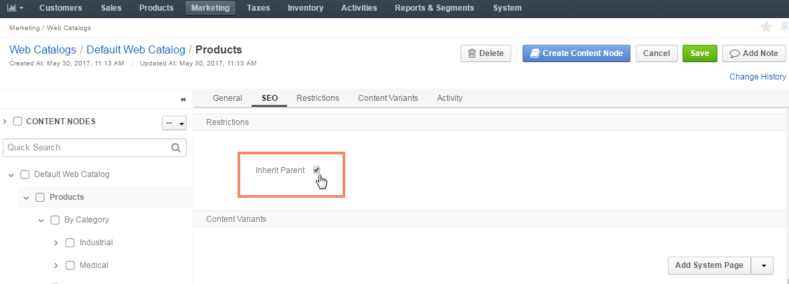
In the Content Variants section, add the default content item to be displayed on the OroCommerce storefront when the node-level restriction conditions are met:
Select the type of content to be displayed on the storefront from the list on the right.

Configure the content node as described in the Configure Content Variants for the Content Node section.
If necessary, create alternative content variants by selecting a content type from the list on the top right of the Content Variants section and providing the set of conditions (localization, website, customer or customer group) to restrict this variant specifically for those cases. To switch the default content variant to a different item, select it using an option to the left of the content variant name.
Configure Content Variants for the Content Node¶
This section provides an overview of the content node types and a brief guidance on their set up.
Note
The first content variant that is added to the node is marked as the default variant. When you add more content variants, please, specify the restrictions next to the content variant details. These restrictions will limit the use of this content variant only to specific cases.
Add a System Page (Web Catalog Content)¶
System page is one of the standard pre-designed pages of OroCommerce Store Front (e.g. Requests for Quotes, Open Orders).
To add a system page to the menu on the OroCommerce Store Front:
Select the Add System Page in the Content Variants list.
The following section shows:

Select the system page from the list.
This step applies only to the content nodes with more than one content variant.
When your system page is not selected as a default variant for the content node, there is a Restrictions section beneath the selected system page. In this section, you can define the condition when the system page overrides the default content variant. See the Configure Content Visibility section for more information.
Click Save when you are done filling in the web catalog content node or keep adding the content variants.
Add a Product Page (Web Catalog Content)¶
Product page node is a direct link to the product details in OroCommerce Store Front.
To add a product page node to the menu on the OroCommerce Store Front:
Select the Add Product Page in the Content Variants list.
The following section shows:

Select the product from the list. To use search, start typing the product name or SKU in the box. To use filtering, click on the bars, and select the filtering conditions in the Manage filters section.
This step applies only to the content nodes with more than one content variant.
When your product page is not selected as a default variant for the content node, there is a Restrictions section beneath the selected product. In this section, you can define the condition when the product details override the default content variant. See Configure Content Visibility section for more information.
Click Save when you are done filling in the web catalog content node or keep adding the content variants.
Add a Category (Web Catalog Content)¶
Category node is a direct link to the product category with the list of products in the OroCommerce Store Front.
To add a category node to the menu on the OroCommerce Store Front:
Select Add Category in the Content Variants list.
The following section shows:
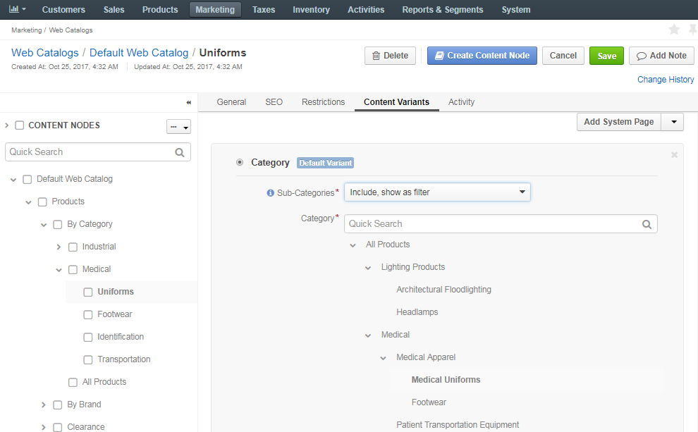Click next to Sub-Categories to select the required option from the list.
The available options are:
Include, show as filter - Used to include all the products assigned to the subcategories of the selected category in addition to the products that are already assigned directly. The subcategories of the first level with at least one product will be displayed as a category filter in the OroCommerce Store Front.

Do not include - Used to include the products assigned only to the selected category. In case the category has a subcategory, its product items will not be displayed.
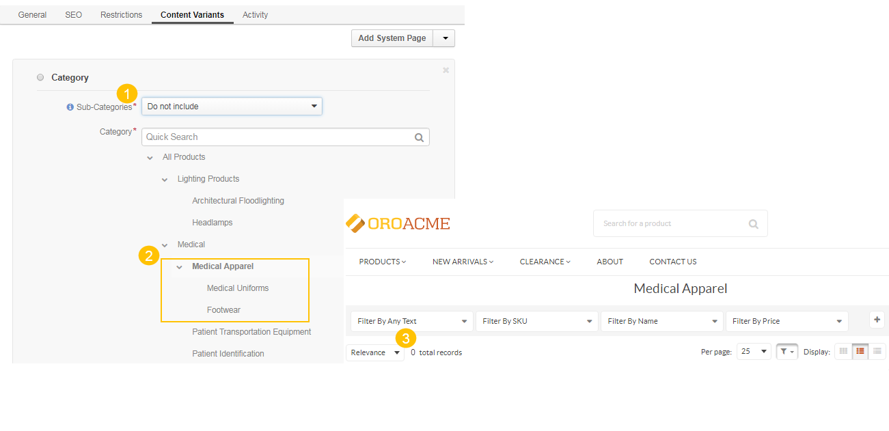
Select the category from the product catalog tree. To use search, start typing the category name in the box. Use > and v to expand/collapse the tree node.

This step applies only to the content nodes with more than one content variant.
When your category is not selected as a default variant for the content node, there is a Restrictions section beneath the tree of categories. In this section, you can define the condition when the selected category overrides the default content variant. See Configure Content Visibility section for more information.
Click Save when you are done filling in the web catalog content node or keep adding the content variants.
Add a Landing Page (Web Catalog Content)¶
Landing Page node is a link to the custom content page created in the Marketing > Landing Pages section.
To add a landing page node to the menu on the OroCommerce Store Front:
Select the Add Landing Page in the Content Variants list.
The following section shows:
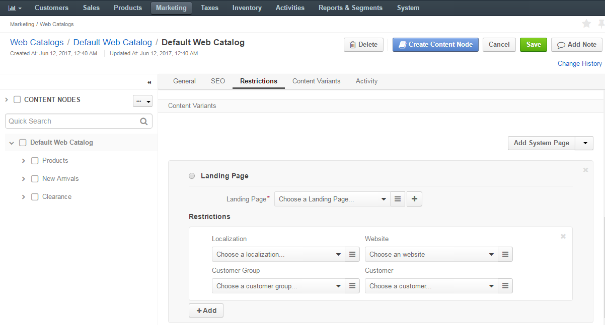Select the existing landing page from the list. To use search, start typing the keywords in the box to search for the necessary page. To use filtering, click on the bars, and select the filtering conditions in the Manage filters section. Alternatively, you can create a new landing page:
Click + to the right from the Landing page list.
The Create Landing Page pops up.
Fill in the landing page details and contents as described here.
This step applies only to the content nodes with more than one content variant.
When your landing page is not selected as a default variant for the content node, there is a Restrictions section beneath the selected landing page. In this section, you can define the condition when the landing page overrides the default content variant. See Configure Content Visibility section for more information.
Click Save when you are done filling in the web catalog content node or keep adding the content variants.
Add a Product Collection (Web Catalog Content)¶
Product Collection is a filter-based segment that helps you display a custom and dynamic set of products in the web catalog similarly to the category contents.
To add a product collection node to the menu on the OroCommerce Store Front:
Select the Add Product Collection in the Content Variants list.
The following section shows:

To name a segment of the product collection:
Enter the segment name for the product collection in the provided field.
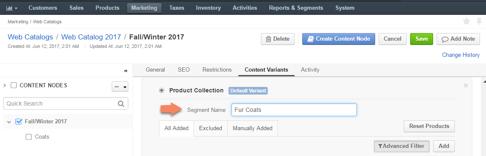To add a product to the collection via filter:
In the All Added tab, click Advanced Filter to set up a filter that will limit the products list and include only the necessary products.

Note
Advanced Filter is hidden by default.
Click Preview Results to check whether the products found via the filter match your criteria, or to exclude unnecessary items from the list.

Note
To manage the columns displayed Within the products grid, click .
To add a product to the collection manually:
Click Add next to Advanced Filter to add the selected products manually. This can be used in cases when you have few products to be added and there is no need to set up a complicated filter, or when you need to add specific products that may be out of the filter’s scope.

Manually added items will appear both in the Manually Added and All Added tabs.
To exclude items from the collection:
To ensure that specific items are excluded from the list of the product collection and will not be included automatically or manually, click Add in the Excluded tab:

Tick the Selected box to the left of the necessary products, and click Add.
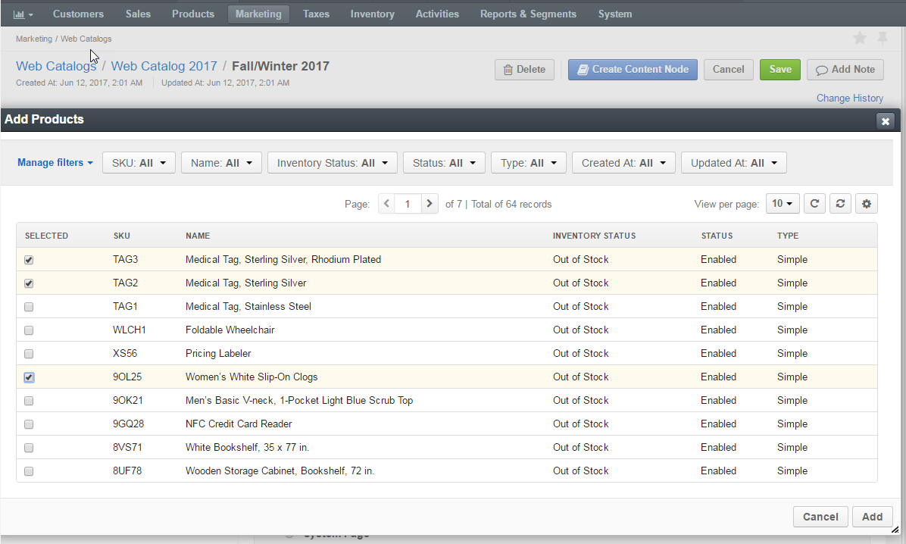Note
You may use filter on the top of the dialog to limit the scope of the products and make it fit into the visible area.
To reset products:
To clear all filters and reset the product collection to the default state, click Reset Products next to the tabs.
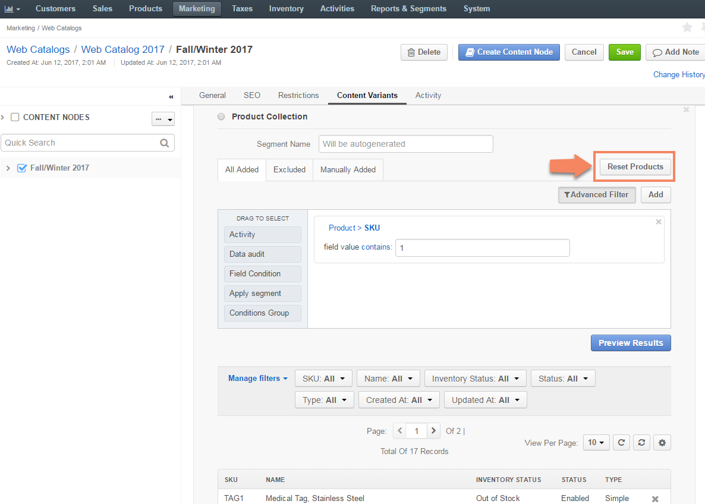This step applies only to the content nodes with more than one content variant.
When your collection is not selected as a default variant for the content node, there is a Restrictions section beneath the product collection preview. In this section, you can define the condition when the product collection overrides the default content variant. See Configure Content Visibility section for more information.
Click Save when you are done filling in the web catalog content node or keep adding the content variants.
Set Up a Default Content Variant¶
The first content variant that is added to the node is marked as the default variant.
When you add more content variants, they have a dedicated restrictions section next to the content variant details. These restrictions will limit the use of this content variant only to specific cases; the default option is used in any other case.
To set up a newly added content variant as default, select the radio on the top left of its type.

Configure Content Visibility¶
Set Up Visibility of Content Node¶
By default, the web catalog with all its nodes has no visibility restrictions and may be displayed for any localization, on any website, and for any customer.
The web catalog node inherits visibility settings from the root node or its parent node.
However, you can adjust it to be displayed for particular localization, on a specific website, and/or for the selected customer(s).
To modify the inherited default settings, clear the Inherit Parent box, and specify the restrictions by selecting all or some of the following: target localization, website, and customer or customer group.
Note
Only one field must be chosen for customers at a time, either a customer group and a customer.
Warning
Never leave the restrictions for non-default variant empty. This may cause unexpected priority collision between the default and non-default variant.
Set Up Visibility of Content Variants¶
Once you add more than one content variant, you will have to apply restrictions to any non-default variants.

These restrictions help you set up the conditions where content should override the default option.
This may be necessary for multiple localizations, where the content item should link to the system page written in the appropriate language. Another example is when your products, product categories or collections differ for various countries, e.g. you might need an alternative product collection for USA and UK. Finally, you might like to limit the offerings based on your customer business and any legal limitations.
Set up a restriction by selecting all or some of the following: target localization, website, and customer or customer group.
Note
Only one field must be chosen for customers at a time, either a customer group and a customer.
Warning
Never leave the restrictions for non-default variant empty. This may cause unexpected priority collision between the default and non-default variant.
To apply content to more than one localization, website, and customer group or customer, click Add and set up additional conditions where content should override the default option.